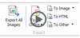

Vous avez besoin d'une solution PDF plus puissante ? Essayez PhantomPDF Standard for HP. Il complète l'édition Express en permettant aux utilisateurs d'effectuer les opérations suivantes :
|
|
Mettre à niveau
|

| Ouvrir... |
| {HistoryList} |
Enregistrez-vous ci-dessous pour recevoir un support GRATUIT sur le produit
Vous avez besoin d'une solution PDF plus puissante ? Essayez PhantomPDF Standard for HP. Il complète l'édition Express en permettant aux utilisateurs d'effectuer les opérations suivantes :
|
|
Mettre à niveau
|
| Créer un PDF |
Modifier un PDF |
| Annoter un PDF |
Scan & OCR PDF |
| Exporter un PDF  |
Personnal. un PDF |
| Organiser un PDF |
Signer un PDF |